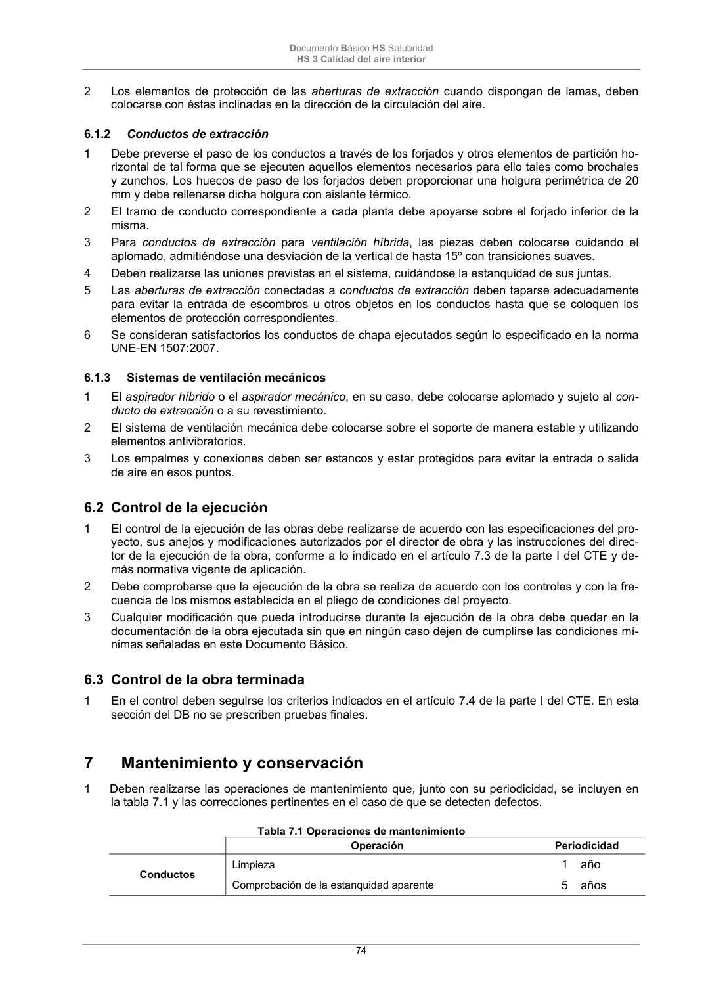

DB-HS Salubridad · edición 2022-06-14 · capa oficial
Documento DB-HS-oficial · SHA-256 del PDF 68df3caacc95f71aee2ec1ba7b2c65ae66155c21e3a8785521b8fdd4fd640d3b
Página física 74 de 184.
Copia fiel del PDF fuente · Fuente oficial
Ficha de la disposición en la fuente oficial
Formato: Texto de la página (Markdown)
Documento Básico HS Salubridad HS 3 Calidad del aire interior 74 2 Los elementos de protección de las aberturas de extracción cuando dispongan de lamas, deben colocarse con éstas inclinadas en la dirección de la circulación del aire. 6.1.2 Conductos de extracción 1 Debe preverse el paso de los conductos a través de los forjados y otros elementos de partición ho- rizontal de tal forma que se ejecuten aquellos elementos necesarios para ello tales como brochales y zunchos. Los huecos de paso de los forjados deben proporcionar una holgura perimétrica de 20 mm y debe rellenarse dicha holgura con aislante térmico. 2 El tramo de conducto correspondiente a cada planta debe apoyarse sobre el forjado inferior de la misma. 3 Para conductos de extracción para ventilación híbrida, las piezas deben colocarse cuidando el aplomado, admitiéndose una desviación de la vertical de hasta 15º con transiciones suaves. 4 Deben realizarse las uniones previstas en el sistema, cuidándose la estanquidad de sus juntas. 5 Las aberturas de extracción conectadas a conductos de extracción deben taparse adecuadamente para evitar la entrada de escombros u otros objetos en los conductos hasta que se coloquen los elementos de protección correspondientes. 6 Se consideran satisfactorios los conductos de chapa ejecutados según lo especificado en la norma UNE-EN 1507:2007. 6.1.3 Sistemas de ventilación mecánicos 1 El aspirador híbrido o el aspirador mecánico, en su caso, debe colocarse aplomado y sujeto al con- ducto de extracción o a su revestimiento. 2 El sistema de ventilación mecánica debe colocarse sobre el soporte de manera estable y utilizando elementos antivibratorios. 3 Los empalmes y conexiones deben ser estancos y estar protegidos para evitar la entrada o salida de aire en esos puntos. 6.2 Control de la ejecución 1 El control de la ejecución de las obras debe realizarse de acuerdo con las especificaciones del pro- yecto, sus anejos y modificaciones autorizados por el director de obra y las instrucciones del direc- tor de la ejecución de la obra, conforme a lo indicado en el artículo 7.3 de la parte I del CTE y de- más normativa vigente de aplicación. 2 Debe comprobarse que la ejecución de la obra se realiza de acuerdo con los controles y con la fre- cuencia de los mismos establecida en el pliego de condiciones del proyecto. 3 Cualquier modificación que pueda introducirse durante la ejecución de la obra debe quedar en la documentación de la obra ejecutada sin que en ningún caso dejen de cumplirse las condiciones mí- nimas señaladas en este Documento Básico. 6.3 Control de la obra terminada 1 En el control deben seguirse los criterios indicados en el artículo 7.4 de la parte I del CTE. En esta sección del DB no se prescriben pruebas finales. 7 Mantenimiento y conservación 1 Deben realizarse las operaciones de mantenimiento que, junto con su periodicidad, se incluyen en la tabla 7.1 y las correcciones pertinentes en el caso de que se detecten defectos. Tabla 7.1 Operaciones de mantenimiento Operación Periodicidad Conductos Limpieza 1 año Comprobación de la estanquidad aparente 5 años

Datos candidatos: compruebe celdas y notas en el PDF.